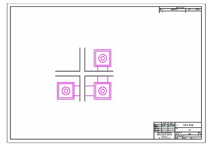
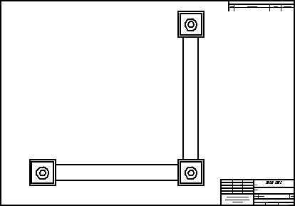
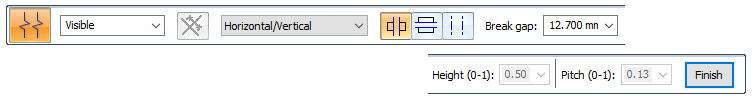
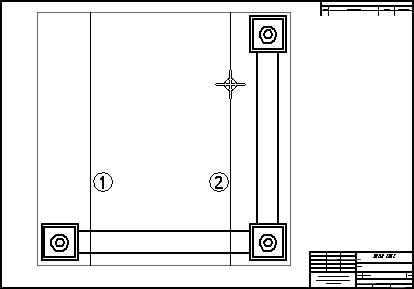
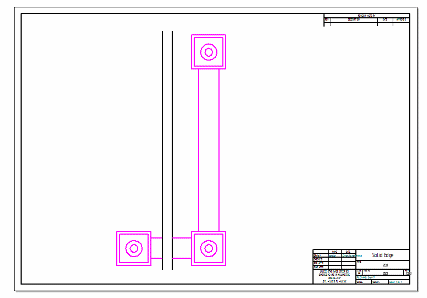
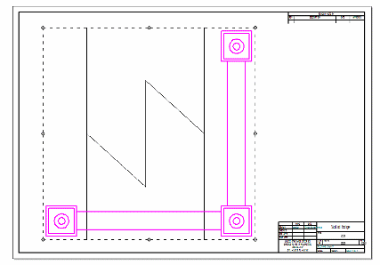
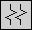
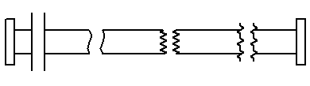

Activity: Broken view creation
This activity covers the use of the Broken View command.
After completing this activity, you will be able to create a broken drawing view of a part on a draft sheet in Solid Edge.
Click here to download the activity file.

Create a new ISO draft document.
-
Choose File →New→ISO Metric Draft.
Select the View Wizard command.
In the Select Model dialog box, make sure the Look in: field is set to the folder where you saved the activity files, and set the Files of type: field to Part Document (*.par).
Select dualbar.par and click Open.
For a part model, the default orientation for the first view placed is a front orientation.
Change this to a Top View using the View Orientation button  on the View Wizard command bar.
on the View Wizard command bar.
Change the scale to 2:1 and place the drawing view on the draft sheet as shown.

Click the Select tool, and then right-click the drawing view. Choose the Broken View command on the shortcut menu.
On the Broken View command bar, set the options as shown.

Place two vertical lines representing the region to be broken as shown.

On the Broken View command bar, click Finish to create the broken view.
The result is shown.

On the Broken View command bar, click the Show Broken View button to switch the view display back to unbroken.

Select the Broken View command again, and then use the Horizontal Break Line option to add another set of break lines to the view.
Save the file as breakline.dft, and then close it.
Create a new ISO Metric draft file, and use the View Wizard command to open and place a front view orientation of bar.par.
Place four sets of break lines on the bar. Each set is a different type.
-
Straight
-
Cylindrical
-
Short Break - Linear
-
Long Break


This completes the activity. Save and close the file.
In this activity you learned how to create broken views using horizontal and vertical breaks. You also learned how to use different break line types.
-
Click the Close button in the upper-right corner of the activity window.